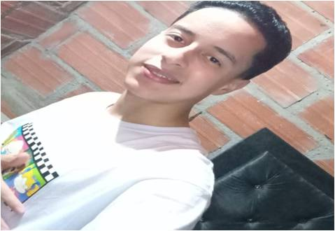
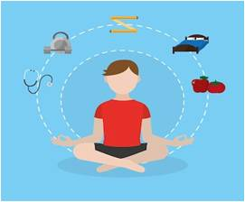

Datos Personales y Foto

Datos personales
Nombre : Alejandro Apellidos : Bedoya Gallo Fecha de nacimiento: 06 de julio de 2006 Documento 1034918958 contacto Dirección: calle 45 AA 32 Teléfono: 3022812660 Gmail:alejobedoyagallo@gmail.com https://www.facebook.com/sharer/sharer.php?u=facebookObjetivo profesional
Para triunfar en proyectos de programación y otros campos, es esencial aprender y crecer en el trabajo. Capacitarse y ganar experiencia nos ayuda a mejorar nuestras habilidades. Con enfoque y práctica, podemos avanzar en nuestras metas y contribuir al éxito de proyectos innovadores.
Presentación Personal
Nombre: Alejandro Bedoya Gallo Profesión: programador de software Resumen: Soy un programador altamente motivado y orientado a resultados con una sólida experiencia en tecnología. Mi enfoque se centra en [mejorar las áreas clave en las que me especializo como en la programación e ingles. Con un historial probado de bachiller y técnico del colegio san pablo, estoy buscando oportunidades para aplicar mis habilidades y contribuir al éxito de mi y avanzar en los proyectos dados, mi capacidad de entender me ayuda mucho en el campo laboral y mi adaptabilidad a la situación que se me presente me ayuda a mejorar y a tener iniciativa y poder sobresalir en mis capacidades
Características Personales: Soy conocido por mi forma de ser, como ser proactivo o tener fuertes habilidades de comunicación. Mi capacidad para adaptarme, como trabajar bien bajo presión o colaborar eficazmente en equipo me ha permitido destacar en entornos profesionales dinámicos.
Habilidades claves 1 Habilidad de Adaptabilidad 2 Habilidades Digitales 3 Habilidades Interpersonales 4 Habilidades Interpersonales
Gustos, Intereses y Hobbies
Mis gustos son: -leer -aprender el ingles -ser responsable con mi vida -mejorar día a día Leer sobre la historia de la humanidad Leer poseía Aprender sobre marketing
Mis intereses son: -viajar -leer -seguir estudiando mientras trabajo -ganar experiencia en los trabajos que postule -dominar el ingles de manera avanzada -seguir avanzando como ciudadano responsable
-programar -bailar -meditar -cocinar -lectura -reciclar -juegos de mesa -viajar -runnig
Proyectos a corto plazo
Terminar: estudios académicos y técnicos de la programación. Y conseguir estudiar programación
Planificar un mejor estilo de vida saludable con un habito diario para ser mejor persona tomando una disciplina en esto
Planificar un mejor estilo de vida saludable con un habito diario para ser mejor persona tomando una disciplina en esto
Otros proyectos
Estudios y Conocimiento
Básicos Habilidades en: - idioma de ingles - Capacidad de trabajo en equipo -Habilidad de comunicación Conocimientos sobre una dieta equilibrada Uso básico de computadoras y software de oficina Ortografía y puntuación
Mas Conocimientos -Matemáticas Básicas Presupuesto y manejo básico de finanzas personales Higiene personal y cuidado básico de la salud Conceptos básicos de apreciación artística
Portafolio Proyectos
Contenido de la sección 6.